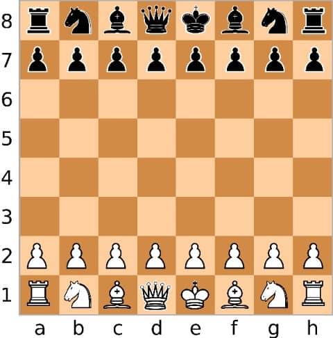

Un jeu d'échec est composé de plusieurs pièces. Au total, chaque joueur possède 16 pièces d'échec pour 6 différentes pièces.
Il possède chacun respectivement :
Chaque pièce a ses forces et ses faiblesses. Il revient au joueur de savoir ce que peut faire chaque pièce, et de tirer le meilleur potentiel de ces dernières afin d'établir les stratégies adéquates pour gagner.